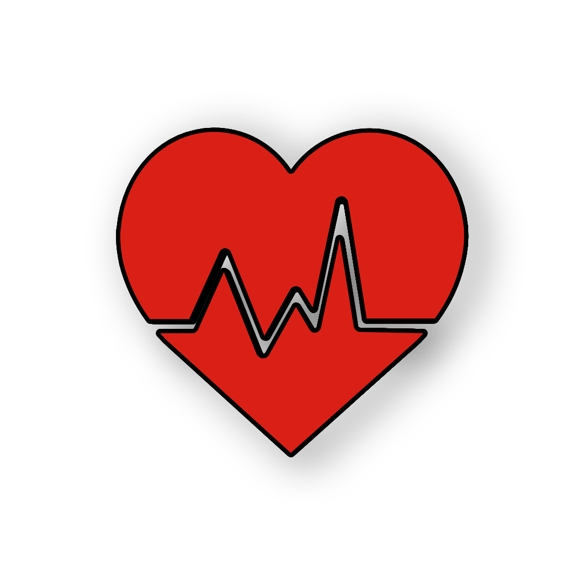

रक्तदान
About us project
The aim of our project is to save lives of people by providing blood to them whenever required.
Contact us
 +91 - 7247020941 (Whats-app only)
+91 - 7247020941 (Whats-app only) g.r.v_gourav
+91 - 8517805802 (Whats-app only)
g.r.v_gourav
+91 - 8517805802 (Whats-app only)
Overview
1. Find local blood recipient and donator quickly and easily.
2. Both donating blood and seeking blood can be well connected.
3. You can also ask for money while donating blood.
4. Data of both donating blood and asking for blood will be safe with us.
5. When your blood is matched with someone you will be notify.
6. App puts the power to save lives in the palm of your hand.
7.The app is free and available for download on android devices.
8. Must be at least 16 years of age, or in accordance with state law.
Gourav's Website